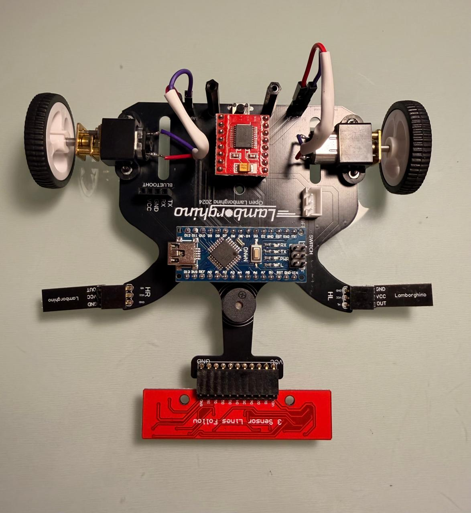

Robot Racer 🏎️
Plataforma robótica en desarrollo para aprender, documentar y optimizar un robot velocista desde pruebas electrónicas básicas hasta una futura versión propia.
Este proyecto se encuentra en una etapa inicial: ya completé una primera fase de armado, pero el montaje sigue en proceso debido a un problema con el sistema de baterías. Mientras ajusto esa parte, estoy testeando sensores, periféricos, buzzer y pulsador usando un Arduino Nano conectado al computador.
Imagen principal pendiente.
🎯 Objetivo
Construir y documentar un robot racer desde una primera plataforma funcional, usando esta etapa como base para aprender electrónica, pruebas de periféricos, integración de sensores y mejoras progresivas de diseño.
- Completar y estabilizar el armado inicial
- Probar sensores, pulsador y buzzer de forma segura
- Documentar errores, decisiones y avances reales
- Proyectar una versión propia con mejor electrónica y posible PCB
⚙️ Estado del proceso
Robot Racer es un proyecto de robótica que estoy comenzando a desarrollar como plataforma de aprendizaje y experimentación. La primera etapa de armado ya fue iniciada, pero el montaje completo quedó en proceso debido a un error con el sistema de baterías: estaba utilizando dos baterías, cada una de una celda, y la configuración no funcionó correctamente para el avance del robot.
Para no detener el proyecto, actualmente estoy trabajando la etapa de pruebas electrónicas con el Arduino Nano conectado al computador. En esta fase estoy verificando los periféricos, el buzzer, el pulsador y los sensores. De momento, los periféricos, el buzzer y el pulsador ya funcionan bien, lo que permite avanzar de forma controlada antes de volver al montaje completo con alimentación independiente.
El proyecto está pensado como una documentación viva: en los próximos días actualizaré esta página con nuevas pruebas, correcciones del sistema de alimentación, fotografías del proceso y avances en la integración del robot. A futuro, me interesa crear una versión propia, lo que implicará aprender diseño de PCB, tomar decisiones de arquitectura electrónica, evaluar mejoras mecánicas y buscar ideas que permitan optimizar el rendimiento sin perder seguridad ni orden en el proceso.
⚡ Componentes y herramientas principales

Primera etapa de armado
Espacio para una foto general del chasis, motores, placa y distribución inicial.
Arduino Nano en pruebas
Foto del montaje conectado al computador para testear sensores, buzzer y pulsador.
Sensores y periféricos
Registro visual de las pruebas con sensores laterales o de línea.
Buzzer y pulsador
Foto de la prueba donde el buzzer y el pulsador ya funcionan correctamente.
Sistema de baterías
Espacio para documentar el problema de alimentación y la solución que implementes.

Trabajo seguro
Registro del uso de guantes, lentes protectores de laboratorio y lupa con luz.
Probar antes de integrar
Separar el montaje completo de las pruebas electrónicas ayuda a detectar errores específicos sin arriesgar todo el sistema.
Alimentación crítica
El problema con las baterías mostró que la etapa de energía no es un detalle secundario: debe revisarse antes de exigir movimiento al robot.
Seguridad en prototipado
Trabajar con guantes, lentes protectores y lupa con luz permite manipular piezas pequeñas y conexiones con mayor comodidad y control.